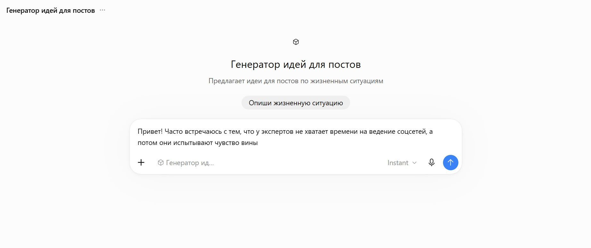
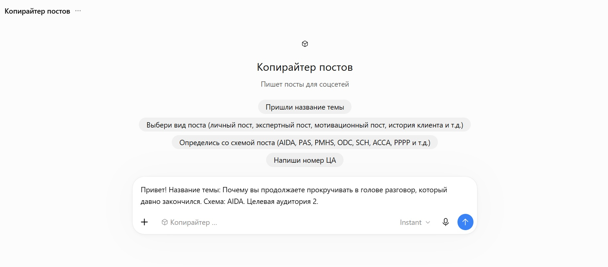

ПЕРСОНАЛЬНЫЕ ИИ-ПОМОЩНИКИ
ИИ-помощники под конкретные рабочие задачи
Персональный ИИ-помощник настраивается под конкретного специалиста, его задачи, аудиторию и особенности работы. Ему не нужно каждый раз заново объяснять контекст - достаточно поставить задачу и получить результат с учетом заданных настроек.
01
Контент-планировщик

В примере помощнику достаточно короткого запроса. Другие заданные настройки он уже учитывает сам.
Что берет на себя:
- Придумывает темы для постов
- Составляет план постов под вашу аудиторию и выбранные социальные сети
- Учитывает ваши задачи и особенности работы
- Экономит время на подготовке плана публикаций
- Не нужно каждый раз заново объяснять, для кого и о чем вы пишете
- Снижает расходы на специалиста, который составляет план публикаций
02
Генератор идей

В примере помощнику достаточно описать мысль или жизненную ситуацию. Он сам превращает ее в идеи для постов с учетом вашей аудитории и стиля.
Что берет на себя:
- Превращает ваши мысли и жизненные ситуации в темы для постов
- Подбирает идеи под вашу целевую аудиторию
- Учитывает ваш стиль и особенности работы
- Предлагает несколько вариантов, как раскрыть одну и ту же мысль
- Помогает находить темы в обычных событиях и ситуациях
- Экономит время на поиске идей для постов
03
Копирайтер постов

В примере помощнику достаточно указать тему и целевую аудиторию. Другие заданные настройки он уже учитывает сам.
Что берет на себя:
- Пишет готовые посты на заданную тему
- Учитывает особенности вашей аудитории
- Выстраивает текст так, чтобы он был понятным и интересным вашим читателям
- Пишет в вашем стиле и учитывает ваши требования к текстам
- Экономит время на написании и доработке постов
- Снижает расходы на специалиста, который пишет тексты